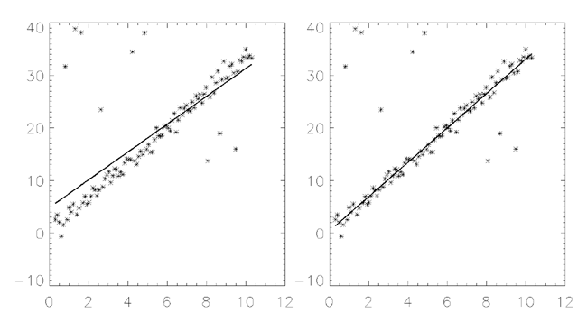

The LADFIT function fits the paired data { xi , yi } to the linear model, y = A + Bx, using a “robust” least absolute deviation method.
The figure below displays a two-dimensional distribution that is fitted to the model y = A + Bx, using a minimized Chi-square error criterion (left) and a “robust” least absolute deviation technique (right). The use of the Chi-square error statistic can result in a poor fit due to an undesired sensitivity to outlying data.
|
 |
This routine is written in the IDL language. Its source code can be found in the file ladfit.pro in the lib subdirectory of the IDL distribution.
Result = LADFIT( X , Y [, ABSDEV = variable ] [, / DOUBLE ] )
The result is a two-element vector containing the model parameters, A and B.
An n -element vector containing the independent variable values. X may be of type integer, floating point, or double-precision floating-point. Note that the X vector must be sorted into ascending order.
An n -element integer, single-, or double-precision floating-point vector. Note that the elements of the Y vector must be paired with the appropriate elements of X .
Set this keyword to a named variable that will contain the mean of the absolute deviation of the Result and Y .
Set this keyword to force the computation to be done in double-precision arithmetic.
; Define two n-element vectors of paired data:
X = [-3.20, 4.49, -1.66, 0.64, -2.43, -0.89, -0.12, 1.41, $
2.95, 2.18, 3.72, 5.26]
Y = [-7.14, -1.30, -4.26, -1.90, -6.19, -3.98, -2.87, -1.66, $
-0.78, -2.61, 0.31, 1.74]
; Sort the X values into ascending order, and sort the Y values to
; match the new order of the elements in X:
XX = X[SORT(X)]
YY = Y[SORT(X)]
; Compute the model parameters, A and B:
PRINT, LADFIT(XX, YY)
IDL prints:
-3.15301 0.930440
|
4.0 |
Introduced |